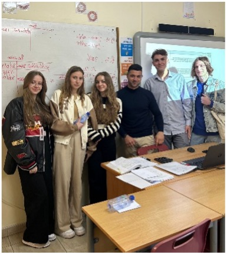

Cyprus
Minulý rok v októbri sme sa zúčastnili exkurzie na Cypre. Vtedy bola jedna z našich zastávok aj súkromná stredná škola Xenion High school. Nadviazali sme spoluprácu, a tak sme sa mali možnosť vrátiť sa tam znova minulý mesiac.
Lietadlom sme prileteli do Larnaky a potom nás autobus priviezol do mesta Paralimni. Hneď ako sme vystúpili, už na nás čakala Irene Antoniou, na ktorú sme sa mohli img/cyprusátiť počas celého pobytu. Ubytovali sme sa na internáte a dostali základné inštrukcie.
Na ďalší deň sme hneď ráno prišli do školy. Naši cyperskí spolužiaci mali pre nás pripravené rôzne zoznamovacie hry, vďaka ktorým sme sa mohli spoznať a povymieňať si navzájom kontakty. Po škole nás Irene zimg/cyprusala do environmentálneho centra Cavo Greko, kde sme sa dozvedeli niečo o lokálnej faune a flóre a mali možnosť skúmať tunajšie rastliny.
Počas pobytu v Paralimni sme sa zúčastňovali vyučovania. Po skupinkách sme boli rozdelení medzi žiakov školy Xenion, a tak sme zažili ich hodiny. Boli sme prekvapení, ako škola fungovala. Hodiny na Cypre sú dlhšie, študenti sa neustále zapájajú a sú aktívni. Učitelia na škole boli nesmierne nápomocní a milí, a ak sme aj niečomu na hodine nerozumeli, stačilo sa opýtať a všetko nám vysvetlili. Zúčastnili sme sa angličtiny, matematiky, fyziky, chémie a ďalších predmetov.
Jednou z našich zastávok bolo aj múzeum folklóru Dherynia, kde sme videli pôvodné cyperské obydlia, vonkajšie múzeum tradičných remesiel a taktiež mládežnícke centrum postavené pre miestnych študentov. Večer nám naši noví spolužiaci pripravili program, keď doniesli na internát stolové hry, karty a nechýbal ani biliard či stolný futbal.
Po škole na ďalší deň sme navštívili Ayia Napu, kde sme sa prešli po parku sôch, navštívili sme múzeum morského života Thalassa, pláž Nissi a novo-vybudovaný prístav.
Keďže škola v sobotu nebola, tak sme si naplánovali celodenný výlet do hlavného mesta Cypru - Nikózie. Nasadli sme na autobus a po hodinke cesty sme boli na mieste. Najprv sme prešli hranice a dostali sme sa do tureckej časti mesta. Tam sme mali možnosť ochutnať miestne jedlá ale aj ich tradičné sladkosti. Ešte sme sa prešli cez miestny trh, okolo mešity a späť na grécku stranu, kde sme sa pokochali krásami mesta a vrátili sa na internát.

Ďalšia aktivita, ktorá bola pre nás pripravená, bola skupinová práca v Paralimni. Našou úlohou bolo odfotiť sa pri rôznych budovách, vyskúšať miestne koláčiky a taktiež naučiť sa pozdrav v gréčtine. Súťažili sme, kto bude prvý. Poobede sme prišli do mesta Protaras, kde sme mali voľnejší program.
Posledný deň na Cypre sme strávili v škole a v Hadjigiorkiských mlynoch na múku v obci Frenaros. V škole nám Irene pripravila „Peace education workshop“, kde sme mohli slobodne vyjadriť názor na sociálne problémy a rôzne komunity. V spomínaných mlynoch sme strávili poobedie. Najprv sme sa dozvedeli, ako sa vyrába múka, mohli sme to sami skúsiť a potom sme vyrábali a tvarovali cestoviny. Tie sme si aj uvarili a zjedli. Potom sme sa už iba pobalili, rozlúčili sa s našimi novými priateľmi a vrátili sme sa domov.
Keďže exkurzia bola na Cypre, rozprávali sme výhradne po anglicky, počas návštev múzeí sme získali nové vedomosti v oblasti biológie, histórie a dejepisu, a tak nám exkurzia rozšírila vedomostné obzory. Nezabudli sme ani na zábavu a počas prestávok alebo obeda sme „kecali“ s Cyperčanmi. Dúfame, že sa exkurziu podarí zorganizovať znova, aby ďalší študenti mohli zažiť tento mega týždeň.
Nakoniec by sme sa chceli poďakovať našej pani riaditeľke Janke Grančičovej a riaditeľke školy Xenion, Katelitse Zouvani Phylactou za umožnenie exkurzie. Pánom profesorom Ptáčovskému a Kalafutovi za realizáciu a dozor, Irene Antoniou za edukačný program a všetkým ďalším učiteľom na Cypre, ktorí nám umožnili zúčastniť sa ich hodín.